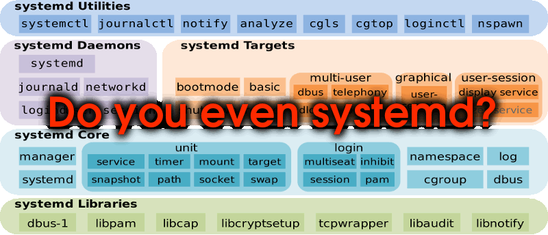

# Process Management on Linux Learn about process management on Linux and how to do it with [systemd][systemd]. This material is part of [architecture & deployment course](https://github.com/MediaComem/comem-archidep) for [Media Engineering](https://heig-vd.ch/formations/bachelor/filieres/ingenierie-des-medias). --- ## What is process management? .breadcrumbs[<a href="#1">Process Management on Linux</a>] Many processes must run for a computer to do its job. Which processes to run and when to run them depends on the use case: * On a desktop computer, you need processes to be launched to display the graphical user interface (GUI), for example. * On a web-facing server, you probably need to run a database and a web server at least. Some processes may have **dependencies**: i.e. they might need other processes to be already running in order to run properly themselves. For example, a PHP application might need a MySQL database to store some data. Processes also need to be **managed**, i.e. it should be easy to start them, stop them, restart them, or to configure them to automatically restart if they crash. --- ### Process managers .breadcrumbs[<a href="#1">Process Management on Linux</a> > <a href="#2">What is process management?</a>] **Process managers** are programs that fulfill this role: i.e. make sure that the correct processes are run in the correct order and are managed correctly thereafter. Most operating systems have a process manager built in: Process manager | Operating system :--- | :--- [launchd][launchd] | [macOS][macos] [Service Control Manager (SCM)][windows-scm] | [Windows][windows] [systemd][systemd] | Many [Linux][linux] distributions [Unix System V][unix-system-v] init system | [Unix][unix] > Some of these do more than just process management, > like systemd which also manages the Linux init process to bootstrap the operating system. --- ### Lightweight process managers .breadcrumbs[<a href="#1">Process Management on Linux</a> > <a href="#2">What is process management?</a>] Simpler process managers also exist, meant to be used to run and manage one application. Some of them are generic while others are specific to a programming language: Process manager | Written in | Can run :--- | :--- | :--- [God][god] | [Ruby][ruby] | *Any executable* [PHP FPM][php-fpm] | [PHP][php] | PHP programs [PM2][pm2] | [Node.js][node] | Node.js programs [Supervisor][supervisord] | [Python][python] | *Any executable* They are easier to use but have fewer features. For example, none of those can handle dependencies between processes. --- class: center, middle ## Systemd .breadcrumbs[<a href="#1">Process Management on Linux</a>]  --- ### What is systemd? .breadcrumbs[<a href="#1">Process Management on Linux</a> > <a href="#5">Systemd</a>] [Systemd][systemd] provides not only process management, but also the fundamental building blocks of a [Linux][linux] operating system, such as an [init system][init]. <p class='center'><img class='w80' src='images/systemd-components.png' /></p> > Systemd is a replacement for the [Unix System V][unix-system-v] init system > and has been the de facto standard for most Linux distributions since 2015. --- ### Unit files .breadcrumbs[<a href="#1">Process Management on Linux</a> > <a href="#5">Systemd</a>] Systemd records the instructions on how to launch and manage a process in a configuration file referred to as a [**unit file**][systemd-unit]. It supports many unit file types such as `service`, `socket`, `timer`, etc. The start of a unit file usually looks like this: ``` [Unit] Description=Something to run [Install] WantedBy=something-else.target ... ``` `[Unit]` is one section in the configuration file. There will be other sections depending on the type of unit file. `[Install]` is an optional section that can be used to express dependencies between units. Here, the `WantedBy` option specifies that this unit will be started after the `something-else` unit has been started. --- ### Service unit file .breadcrumbs[<a href="#1">Process Management on Linux</a> > <a href="#5">Systemd</a>] The unit file type that interests us is [`service`][systemd-service], which will configure, launch and manage a long-running process such as a database or application. A service unit file will have a `[Service]` section. Common options are: Option | Description :--- | :--- `ExecStart` | Command to run to start the service `WorkingDirectory` | Directory in which to run the command `User` | User to run the process as (can be used to limit access) And [many more][systemd-service-options]. --- ### Location of unit files .breadcrumbs[<a href="#1">Process Management on Linux</a> > <a href="#5">Systemd</a>] Unit files are named after their type. For example, a `service` unit file will be named `something.service`. Systemd will look in several directories for unit files: Location | Description :--- | :--- `/lib/systemd/system` | Unit files installed by the operating system or by packages (e.g. a database) `/etc/systemd/system` | Unit files installed by the system administrator --- class: commands-table ### The `systemctl` command .breadcrumbs[<a href="#1">Process Management on Linux</a> > <a href="#5">Systemd</a>] The `systemctl` or **system** **c**on**t**ro**l** command can be used to enable/disable and start/stop units once their configuration file is in place: Command | Description :------------------------------- | :----------------------------------------------------------------------------------------------- `sudo systemctl status <unit>` | Display the current status of a unit. `sudo systemctl enable <unit>` | Enable a new unit file. This will enable it to start on boot if it has the correct dependencies. `sudo systemctl start <unit>` | Start a unit. `sudo systemctl stop <unit>` | Stop a unit. `sudo systemctl restart <unit>` | Restart (stop and start) a unit. `sudo systemctl reenable <unit>` | Re-enable an existing unit file after its dependencies have been modified. `sudo systemctl daemon-reload` | Reload unit files after they have been modified. --- class: commands-table ### The `journalctl` command .breadcrumbs[<a href="#1">Process Management on Linux</a> > <a href="#5">Systemd</a>] Services started with systemd have their standard output and standard error streams collected and logged by [journald][systemd-journald], one of the default services provided by systemd itself. The `systemctl status` command sometimes shows you an excerpt of these logs. The `journalctl` command allows you to read the full logs: Command | Description :--- | :--- `sudo journalctl -u <unit>` | Display a unit's logs. `sudo journalctl -f -u <unit>` | Display and follow a unit's logs in real time. --- ## References .breadcrumbs[<a href="#1">Process Management on Linux</a>] * [Systemd Unit Configuration][systemd-unit] * [Systemd Service Configuration][systemd-service] * [Systemd Execution Environment Configuration][systemd-exec] * [Red Hat Enterprise Linux - System Administrator's Guide - Managing Services With Systemd](https://access.redhat.com/documentation/en-us/red_hat_enterprise_linux/7/html/system_administrators_guide/chap-managing_services_with_systemd) * [Systemd journald Service][systemd-journald] [god]: http://godrb.com/ [init]: https://en.wikipedia.org/wiki/Init [launchd]: https://en.wikipedia.org/wiki/Launchd [linux]: https://en.wikipedia.org/wiki/Linux [macos]: https://en.wikipedia.org/wiki/MacOS [node]: https://nodejs.org/en/ [pm2]: http://pm2.keymetrics.io/ [php]: http://www.php.net/ [php-fpm]: http://php.net/manual/en/install.fpm.php [ruby]: https://www.ruby-lang.org/ [python]: https://www.python.org/ [supervisord]: http://supervisord.org/ [systemd]: https://en.wikipedia.org/wiki/Systemd [systemd-exec]: https://www.freedesktop.org/software/systemd/man/systemd.exec.html [systemd-journald]: https://www.freedesktop.org/software/systemd/man/systemd-journald.service.html [systemd-service]: https://www.freedesktop.org/software/systemd/man/systemd.service.html [systemd-service-options]: https://www.freedesktop.org/software/systemd/man/systemd.service.html#Options [systemd-unit]: https://www.freedesktop.org/software/systemd/man/systemd.unit.html [unix]: https://en.wikipedia.org/wiki/Unix [unix-system-v]: https://en.wikipedia.org/wiki/UNIX_System_V [windows]: https://en.wikipedia.org/wiki/Microsoft_Windows [windows-scm]: https://en.wikipedia.org/wiki/Service_Control_Manager